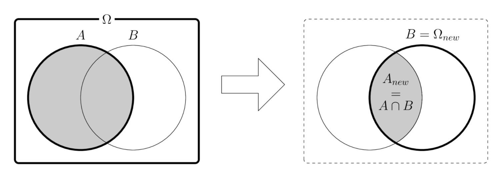
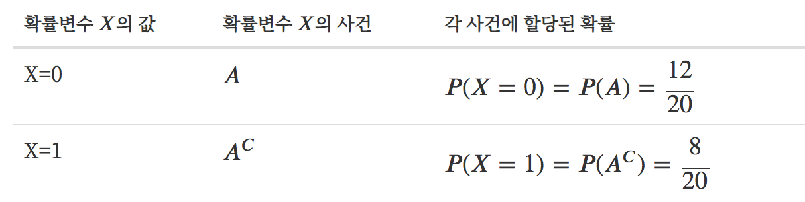
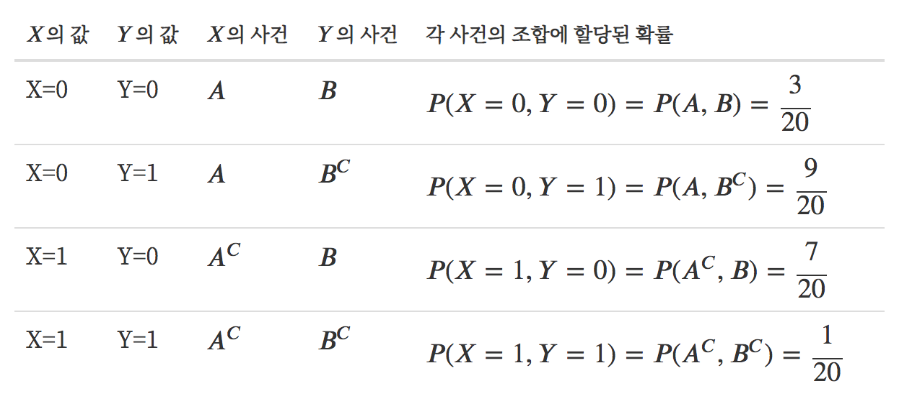
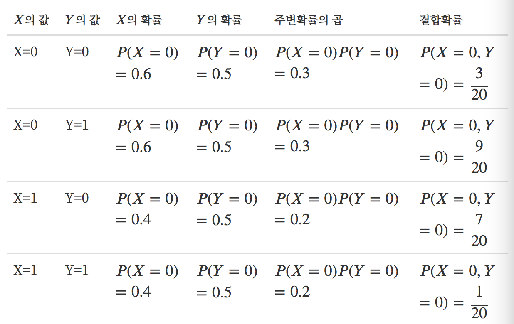

결합확률과 조건부확률
Summary
- 결합확률(joint probability)는 사건 A,B가 동시에 발생할 확률이다.
- 주변확률(marginal probability)는 결합되지 않는 개별사건 P(A), P(B)이다.
- 조건부확률(conditional probability)는 B가 사실일 경우 사건 A대한 확률이다. P(A|B)
- 확률변수는 확률적인 숫자값을 가지는 변수로 확률분포 그 안에 내포하고 있어 그 확률분포에 따라 숫자를 출력할 수 있다.
결합확률(joint probability) 은 사건 A와 B가 동시에 발생할 확률이다. 사건(명제/주장) A도 진실이고 사건(명제/주장) B도 진실이므로 사건 A와 B의 교집합의 확률을 계산하는 것과 같다.
주변확률(marginal probability) 은 결합확률과 대비되는 개념으로 결합되지 않는 개별 사건의 확률 P(A) 또는 P(B)이다.
조건부확률(conditional probability) 는 B가 사실일 경우의 사건 A에 대한 확률를 사건 B에 대한 사건 A의 조건부확률이라고 한다.
기호 | 는 if를 뜻한다.
조건부확률의 값은 다음처럼 정의한다.
사건 B가 사실이므로 모든 가능한 표본은 사건 B에 포함되어야 한다. 즉 새로운 실질적 표본 공간은 가 된다.
사건 A의 원소는 모두 사건 B의 원소도 되므로 사실상 사건 의 원소가 된다. 즉 새로운 실질적 가 된다.
따라서 사건 A의 확률 즉, 신뢰도는 원래의 신뢰도(결합확률)를 새로운 표본 공간의 신뢰도(확률)로 정규화(normalize) 한 값이라고 할 수 있다.

조건부확률
사건 B가 발생한 경우의 사건 A의 확률이다. 표본이 이벤트 B에 속한다는 새로운 사실 을 알게 되었을 때,이 표본이 사건 A에 속한다는 사실의 정확성(신뢰도)이 어떻게 변하는지를 알려준다. 새로운 정보가 주어지든 주어지지 않았든 확률이 변함이 없으면 사건 A와 사건 B는 서로 독립(independent)이라고 한다.
독립
수학적으로 사건 A와 사건 B의 결합확률의 값이 관계가 성립하면 두 사건 A와 B는 서로 독립(independent) 라고 정의한다.
독립인 경우 조건부확률과 원래의 확률이 같아짐을 알 수 있다. 즉, B라는 사건이 발생하든 말든 사건 A에는 전혀 영향을 주지 않는다는 것이다.
원인과 결과, 근거와 추록, 가정과 조건부 결론
조건부확률 에서 사건(주장/명제) B, A는 각각 아래와 같이 생각할 수 있다.
- "가정과 그 가정에 따른 조건부 결론"
- "원인과 결과"
- "근거와 추론"
결합확률의 정의를 바꿔 쓰면 다음과 같이 된다.
이 식은 다음과 같은 관점에서 볼 수 있다.
A, B가 모두 발생할 확률은 B라는 사건이 발생할 확률과 그 사건이 발생한 경우 다시 A가 발생할 경우의 곱
예제
- 확률표기에서 쉼표(comma)가 교집합을 뜻한다는 것을 기억한다.
사슬법칙
사슬 법칙(chain rule) 이란 조건부확률과 결합확률의 관계를 확장하면 복수의 사건 에 대한 조건부 확률을 다음처럼 쓸 수 있다. 이를 사슬 법칙(chain rule) 이라고 한다.
확률변수
확률변수(random variable) 는 확률적인 숫자 값을 가지는 변수이다. 처럼 알파벳 대문자로 표기한다. 확률변수는 확률분포를 그 안에 내포하고 있어서 그 확률분포에 따라 숫자를 출력할 수 있다. 확률변수 가 가진 확률을 확률변수의 확률 라고 한다.
- 예시

결합확률의 확률분포 는 각 확률변수가 가질 수 있는 값의 조합으로 나타난다.
- 예시

두 확률변수 가 가질 수 있는 모든 사건의 조합에 대해 독립이 성립하면 두 확률변수 가 독립 이라고 한다. 주변확률의 곱을 구해서 결합확률과 비교해보면 확률변수 는 독립여부를 알 수 있다.

pgmpy 패키지
pgmpy(Probabilistic Graphical Models in Python) 패키지를 사용하면 이산확률모형을 쉽게 구현할 수 있다.
pgmpy 패키지의 JointProbabilityDistribution 클래스는 결합확률 모형을 만들기 위한 클래스이다. 사용법은 다음과 같다.
JointProbabilityDistribution(variables, cardinality, values)
variables: 확률변수의 이름 문자열의 리스트. 정의하려는 확률변수가 하나인 경우에도 리스트로 넣어야 한다.cardinality: 각 확률변수의 표본 혹은 배타적 사건의 수의 리스트values: 확률변수의 모든 표본(조합)에 대한 (결합)확률 값의 리스트
예시
from pgmpy.factors.discrete import JointProbabilityDistribution as JPD
px = JPD(['X'], [2], np.array([12, 8]) / 20)
print(px)
#결과
+-----+--------+
| X | P(X) |
+=====+========+
| X_0 | 0.6000 |
+-----+--------+
| X_1 | 0.4000 |
+-----+--------+
확률변수 와 확률변수 의 결합확률은 다음처럼 정의한다.
pxy = JPD(['X', 'Y'], [2, 2], np.array([3, 9, 7, 1]) / 20)
print(pxy)
#결과
+-----+-----+----------+
| X | Y | P(X,Y) |
+=====+=====+==========+
| X_0 | Y_0 | 0.1500 |
+-----+-----+----------+
| X_0 | Y_1 | 0.4500 |
+-----+-----+----------+
| X_1 | Y_0 | 0.3500 |
+-----+-----+----------+
| X_1 | Y_1 | 0.0500 |
+-----+-----+----------+
JointProbabilityDistribution 클래스는 결합확률로부터 주변확률을 계산하는 marginal_distribution 메서드, marginalize 메서드와 조건부확률을 계산하는 conditional_distribution 메서드를 제공한다.
marginal_distribution(values, inplace=True)
values: 주변확률을 구할 확률변수의 이름 문자열 리스트inplace:True이면 객체 자신을 주변확률 모형으로 변화시킨다.False면 주변확률 모형 객체를 반환한다.marginal_distribution메서드는 인수로 받은 확률변수에 대한 주변확률분포를 구한다. 다음 코드는 결합확률로부터 주변확률 , 를 계산한다.pmx = pxy.marginal_distribution(['X'], inplace=False) print(pmx) #결과 +-----+--------+ | X | P(X) | +=====+========+ | X_0 | 0.6000 | +-----+--------+ | X_1 | 0.4000 | +-----+--------+
marginalize(values, inplace=True)
values: 어떤 확률변수의 주변확률을 구하기 위해 없앨 확률변수의 이름 문자열 리스트inplace:True이면 객체 자신을 주변확률 모형으로 변화시킨다.False면 주변확률 모형 객체를 반환한다.marginalize메서드는 인수로 받은 확률변수를 주변화(marginalize)하여 나머지 확률변수에 대한 주변확률분포를 구한다. 다음 코드도 앞과 마찬가지로 결합확률로부터 주변확률 ),를 계산한다.pmx = pxy.marginalize(['Y'], inplace=False) print(pmx) #결과 +-----+--------+ | X | P(X) | +=====+========+ | X_0 | 0.6000 | +-----+--------+ | X_1 | 0.4000 | +-----+--------+
conditional_distribution(values, inplace=True)
values: 주변확률을 구할 확률변수의 이름 문자열과 값을 묶은 튜플의 리스트inplace:True이면 객체 자신을 조건부확률 모형으로 변화시킨다.False면 조건부확률 모형 객체를 반환한다.conditional_distribution메서드를 사용하면 어떤 확률변수가 어떤 사건이 되는 조건에 대해 조건부확률값을 계산한다. 다음 코드는 결합확률로부터 조건부확률 ,를 계산한다.py_on_x0 = pxy.conditional_distribution([('X', 0)], inplace=False) # 사건 A에 대한 조건부확률 print(py_on_x0) #결과 +-----+--------+ | Y | P(Y) | +=====+========+ | Y_0 | 0.2500 | +-----+--------+ | Y_1 | 0.7500 | +-----+--------+다음 코드는 결합확률로부터 조건부확률 , 를 계산한다.
py_on_x1 = pxy.conditional_distribution([('X', 1)], inplace=False) print(py_on_x1) #결과 +-----+--------+ | Y | P(Y) | +=====+========+ | Y_0 | 0.8750 | +-----+--------+ | Y_1 | 0.1250 | +-----+--------+다음 코드는 결합확률로부터 조건부확률 , 를 계산한다.
px_on_y0 = pxy.conditional_distribution([('Y', 0)], inplace=False) # 사건 B에 대한 조건부확률 print(px_on_y0) #결과 +-----+--------+ | X | P(X) | +=====+========+ | X_0 | 0.3000 | +-----+--------+ | X_1 | 0.7000 | +-----+--------+
독립여부 확인 : check_independence 메서드를 이용하면 두 확률변수간의 독립도 확인할 수 있다.
pxy.check_independence(['X'], ['Y'])
#결과 False
두 개의 JointProbabilityDistribution 객체끼리 곱하면 두 분포가 독립이라는 가정하에 결합확률을 구한다. 이 값과 원래의 결합확률을 비교하면 독립이 아니라는 것을 알 수 있다.
print(px * py)
print(pxy)
#결과
+-----+-----+----------+
| X | Y | P(X,Y) |
+=====+=====+==========+
| X_0 | Y_0 | 0.3000 |
+-----+-----+----------+
| X_0 | Y_1 | 0.3000 |
+-----+-----+----------+
| X_1 | Y_0 | 0.2000 |
+-----+-----+----------+
| X_1 | Y_1 | 0.2000 |
+-----+-----+----------+
+-----+-----+----------+
| X | Y | P(X,Y) |
+=====+=====+==========+
| X_0 | Y_0 | 0.1500 |
+-----+-----+----------+
| X_0 | Y_1 | 0.4500 |
+-----+-----+----------+
| X_1 | Y_0 | 0.3500 |
+-----+-----+----------+
| X_1 | Y_1 | 0.0500 |
+-----+-----+----------+